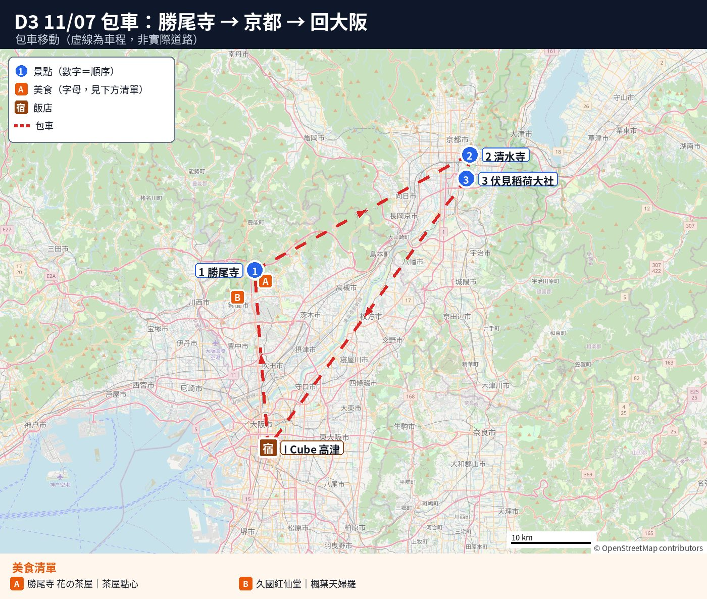
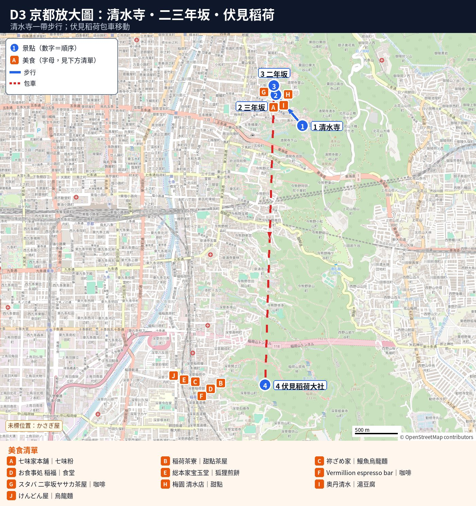
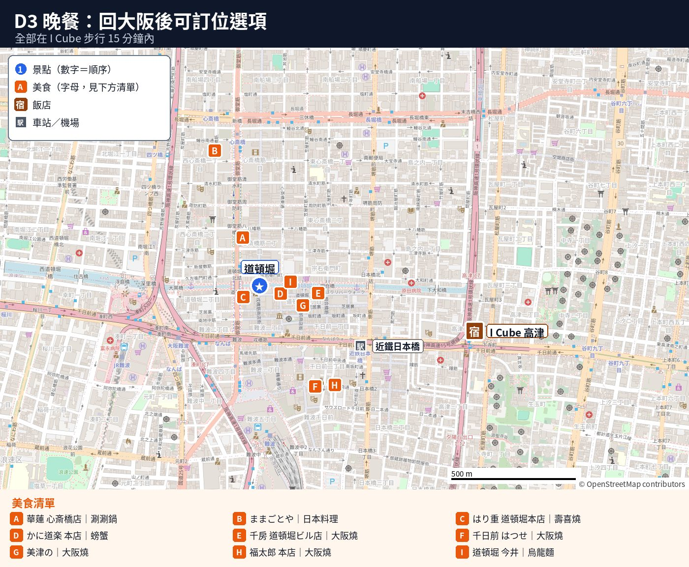

🚐 D3 11/07（六）｜包車：勝尾寺 → 清水寺 → 伏見稻荷
🗺️ 本日地點檔：CSV｜KML（可匯入 Google 我的地圖）
🗓️
Day 3 重點（11/07 週六，包車 08:00 出發 → 約 16:45 回飯店，約 9 小時，在 10 小時內）
- 🚃 路線：飯店 → 勝尾寺 → 清水寺（茶わん坂下車）→ 伏見稻荷 → 回飯店。
- 🚃 距離：估約 130 km（上限 200 km）。
- 💴 過路費：估 ¥3,300–4,000（自付）。
- 💴 停車費：勝尾寺 ¥1,000、清水寺估 ¥1,000–2,000、伏見稻荷免費。
- 💴 門票：勝尾寺 ¥500×5＝¥2,500；清水寺 ¥500×5＝¥2,500；伏見稻荷免費。
- 💴 現金：過路費、停車、かさぎ屋、けんどん屋只收現金，建議帶 ¥30,000–40,000。
- 💴 周遊卡：這天不能用（勝尾寺、京都皆不在範圍內）。
- 👴 爸爸：每站停最近入口，皆有店可坐休。
- 🍁 紅葉：11/7 剛變色（往年勝尾寺 11/14、清水寺 11/23 最紅）。
- ⚠️ 勝尾寺停車：假日完全預約制（未訂禁停），先跟司機確認誰訂。
- ⏰ 風險：週六京都塞車（嵐山有もみじ祭）、清水寺難停。
- ⏰ 緩衝：準時 08:00 出發留 1 小時緩衝，超時 ¥5,000/時，來不及照 Plan B 刪一站。
📑 目錄（點開）
🗺️ 今日路線圖
圖例：藍圓＝景點（數字為順序）｜橘方＝美食｜連線只表示大概方向



地圖資料 © OpenStreetMap contributors
📍 本日景點（點卡片看詳細）
🚐
包車資訊（Klook #159289）
- 🚃 車型：7 人座 Alphard，中文司機（只開車不導覽）。
- ⏰ 方案：10 小時／200 km，服務時間 08:00–20:00。
- 💴 加價：08:00 前或超時 ¥5,000/時；超里程 ¥200/km。
- 💴 跨城市費：可能 ¥6,000/城（先問箕面、京都算不算）。
- 💴 自付：過路費、停車費（備現金）。
- ⏰ 聯絡：出發前 1–2 天司機用 LINE 或 WhatsApp 聯絡。
- ⏰ 預訂：11/02 查 11/6、11/7 同價有車；價每日變，最晚前 24 小時必訂。
- ⚠️ 個資：訂單號、PIN、個資勿貼公開處。
⏱️
節奏評估：適中（約 9 小時，開車約 3.3–4.7 小時可車上休；每站停最近入口）
- 👴 步行：勝尾寺山門到本堂有坡梯（約 10–15 分）；清水寺走爸爸版少爬坡；伏見稻荷僅到千本鳥居入口。
- ⏰ 排隊：週六清水寺、伏見稻荷中午人最多。
- ☕ 休息：每站皆有茶屋或咖啡店，或車上休。
- ⏰ 緩衝：約 1 小時（20:00 前、10 小時內不加價）。
- 🅱️ 刪減：照 Plan B 刪一站（通常刪伏見稻荷）；爸爸累不走三年坂。
- ➕ 加碼：去二年坂かさぎ屋或伏見稻荷茶寮多坐；勿加景點（D4 搬行李早休）。
🕘 時間表
每段交通都寫「走路 X 分＋坐車 Y 分」。開車時間＝地圖不塞車的時間再加 30–50%（週六估計）。
| 時間 | 行程 | 走路＋坐車 |
|---|---|---|
| 08:00 | 飯店門口上車 | 🚶 0 分＋🚐 45–60 分（約 28 km，新御堂筋，不用過路費） |
| 08:50–10:15 | ⛩️ 勝尾寺 | 停車場下車，山門在旁邊；寺內有坡、有樓梯 |
| 10:15 | 勝尾寺 → 清水寺 | 🚶 約 5 分（回停車場）＋🚐 60–80 分（約 45 km，新名神＋名神高速） |
| 11:30–13:00 | 🏯 清水寺＋三年坂・二年坂（休息＋簡單吃） | 茶わん坂下車；見下面 |
| 13:00 | 清水寺 → 伏見稻荷 | 🚶 約 5–10 分（到上車點）＋🚐 20–30 分（約 5 km，市區） |
| 13:30–15:15 | ⛩️ 伏見稻荷（本殿＋千本鳥居入口；午餐交給司機安排） | 大社停車場下車，走 1–3 分到樓門（估計） |
| 15:15 | 伏見稻荷 → 飯店 | 🚶 約 5 分＋🚐 60–90 分（約 49 km，名神＋阪神高速；週六傍晚回程會塞） |
| 約 16:30–16:45 | 回到飯店 | 還剩約 1 小時可以當緩衝（20:00 前、10 小時內都不加價） |
📍 每一站
⛩️ 參拜禮儀先看：📄 ⛩️ 日本神社參拜流程與注意事項
📍 08:50–10:15 勝尾寺（入山 ¥500）
👉 詳細：📄 勝尾寺
- 停留約 1 小時 25 分。週六 8:00 開（17:30 最後入山）。入山券可先網路買，不用排隊。
- 停車：週六日完全預約制，未訂禁停。
- 預約：官網免費訂（14 天內可訂），選 9 點左右，先與司機確認誰訂。
- 費用：每 2 小時 ¥1,000 現場付。
- 👴 優先區：預約理由寫長輩不能久站久走，現場再問警衛能否停優先區。
- 🍁 11/7 紅葉多半剛開始變色（往年約 11/14 前後最紅）。
- 爸爸：山門到本堂有坡和樓梯（約 10–15 分）。累就在入口旁休息，其他人上去再回來。
☕ 休息：📍勝尾寺 花の茶屋（出入口旁，有桌位）
🚐 10:15 勝尾寺 → 清水寺（茶わん坂）
- ⏱️ 🚶 約 5 分＋🚐 60–80 分（約 45 km；地圖不塞車約 50 分）
- 路線：箕面とどろみIC → 新名神 → 名神 → 京都南IC → 市區。
- 💴 過路費：箕面とどろみ → 京都南 ¥1,350（普通車，估計；ETC 價可能不同）。
- Google Maps 路線
📍 11:30–13:00 清水寺（¥500）＋三年坂・二年坂
👉 詳細：📄 清水寺・三年坂・二年坂
- 停留約 1.5 小時（含三年坂・二年坂）。參拜費 ¥500。🍁 11/7 多半還是綠的或剛開始變色（往年約 11/23 前後最紅）。
- 車子不能開到門口：門前的路 8:00–19:00 禁止車輛進入（官方）。
- 👴 爸爸下車（官方）：從茶わん坂防災道路按對講機，警衛帶到本堂附近（無段差免爬坡，現場說明但不保證能進）。
- 停車：「清水坂観光駐車場」10/7–12/10 自用車不能停。包車停哪裡等，要先問司機。
- 只看仁王門＋本堂約 40–50 分。音羽瀑布要下坡再上坡，爸爸可以不去。
- 兩種走法：
- 爸爸版：看完本堂，回到下車點，坐車到二年坂下面跟大家會合。
- 大家走路版：清水寺 → 三年坂（石階，下坡）→ 二年坂，約 15–20 分（估計）。司機在東大路通附近接，地點用 LINE 約。
☕ 休息：📍スターバックス 京都二寧坂ヤサカ茶屋店（榻榻米座位）
☕ 休息：📍かさぎ屋（甘味處，週六有開，只收現金）
🚐 13:00 清水寺 → 伏見稻荷
- ⏱️ 🚶 約 5–10 分（到上車點）＋🚐 20–30 分（約 5 km；地圖不塞車約 11 分）
- 💴 過路費：¥0
- Google Maps 路線
📍 13:30–15:15 伏見稻荷大社（免費）
👉 詳細：📄 伏見稻荷大社
- 停留約 1 小時 45 分。停車：大社停車場免費（約 175 台），要從南邊進去；週六很塞，照現場人員指示移車（官方）。
- 🍱 午餐交給司機安排：時間和地點請司機依當天路況決定（早餐吃飽一點，車上帶點心）。可以跟司機提議：
- 📍手打うどん けんどん屋（稻荷站旁，うどん，只收現金、賣完就收）
- 📍お食事処 稲福（參道上的食堂，可前一天電話訂位）
- 參拜：樓門 → 本殿 → 千本鳥居入口一小段就折返，不上山。
☕ 休息：📍稲荷茶寮（境內，週六有開）
🚐 15:15 伏見稻荷 → 飯店
- ⏱️ 🚶 約 5 分＋🚐 60–90 分（約 49 km；地圖不塞車約 57 分）
- 路線：京都南IC → 名神 → 豊中IC → 阪神高速 → 市區（司機決定）。
- 💴 過路費：京都南 → 豊中 ¥1,360（普通車）＋阪神高速約 ¥600–1,300（估計）。
- Google Maps 路線
🍽️ 晚餐（11/7 週六，約 16:45 回飯店，先休息再出門）
- 📍福太郎 本店－大阪燒，食べログ 3.69，百名店。週六 12:00–23:30（料理 LO 22:45）。不能訂位，週六晚會排隊。每人約 ¥1,500–3,000。
- 📍美津の－大阪燒老店，食べログ 3.56，百名店。11:00–22:00（LO 21:00），無休。每人約 ¥2,000–3,000。
- 📍道頓堀 今井 本店－烏龍麵、親子丼，食べログ 3.58。料理 LO 20:45，週三休。適合想吃清淡。每人約 ¥1,000–2,000。
- 前兩天吃過的就換另一家。爸爸累的話，叫 GO 計程車（約 1 km，估計）。
🍽️ 可訂位晚餐備選（11/7 週六。皆可網路訂位、有座，在難波／道頓堀／心齋橋（離飯店約 5–15 分）。11/03 查證，營業以店家為準。僅電話訂已刪；低於 3.5 有標）
🏮 在地人推薦（食べログ 3.5 以上）
- 📍華蓮 大阪心斎橋店－鹿兒島黑牛豬しゃぶしゃぶ、すき焼き，食べログ 3.60（百名店 2026）。
- ⏰ 17:00–22:30（LO 21:30），無休。
- 👴 B1F，90 席，有包廂、掘りごたつ（可放腳）。
- 💴 每人約 ¥10,000–15,000（+10% 服務費）。
- 📱 網路訂位（1.5 小時制，19:30 後電洽）：食べログ｜06-6213-8929。
- 📍ままごとや－季節板前料理（約 70 道單點），食べログ 3.65，心齋橋站走 2 分（5F）。
- ⏰ 17:00–23:00（LO 22:00；週六至 22:30，LO 21:30），週日休。
- 👴 25 席：吧台 15 席有椅、半包廂 2 間掘りごたつ（脫鞋）。
- 💴 每人約 ¥10,000–15,000（套餐 ¥12,000 起，當天取消收 100%）。
- 📱 網路訂位：食べログ｜06-6121-5077。
🏯 老舖／經典
- 📍はり重 道頓堀本店－すき焼き、しゃぶしゃぶ，食べログ 3.55（百名店 2026）。
- ⏰ 17:00–21:00（LO 20:00），週二休。
- 👴 200 席有包廂；部分榻榻米，訂位註明「椅子席（テーブル席）希望」。
- 💴 每人約 ¥10,000–20,000（套餐 ¥9,900 起）。
- 📱 網路訂位：食べログ｜06-6211-7777。
📸 網紅型／觀光名店
- 📍かに道楽 本店－螃蟹會席（道頓堀大螃蟹招牌），食べログ 3.42（低於 3.5）。
- ⏰ 11:00–22:00（最後入店 21:00），無休。
- 👴 300 席以上，有桌椅、包廂、道頓堀窗景。
- 💴 套餐約 ¥6,600–13,200。
- 📱 網路訂位：Hot Pepper｜食べログ。
👨👩👧 家庭友善／平價
- 📍千房 道頓堀ビル店－大阪燒（店員桌邊代煎、マヨビーム表演），食べログ 3.25（低於 3.5）。
- 📍千日前 はつせ－1945 年大阪燒老店（自己鐵板煎），Hot Pepper 4.1（1,242 則，食べログ未查到）。
- ⏰ 11:30–24:00（LO 23:00），無休。
- 👴 全包廂但皆座敷（脫鞋坐榻榻米），爸爸膝蓋不好勿選。
- 💴 每人約 ¥2,500–3,500（套餐 ¥3,300 起）。
- 📱 網路訂位：Hot Pepper（官網寫電洽，Hot Pepper 可網訂）。
🦀 蟹
- 🦀 想吃蟹吃到飽：看 📄 🦀 帝王蟹吃到飽評估（真帝王蟹、價格、時間比較）。
🛣️ 距離、時間、過路費
| 路段 | 距離 | 開車時間（不塞車 → 週六估計） | 過路費（估計） |
|---|---|---|---|
| 飯店 → 勝尾寺 | 約 28 km | 42 分 → 45–60 分 | ¥0（新御堂筋） |
| 勝尾寺 → 清水寺 | 約 45 km | 50 分 → 60–80 分 | ¥1,350 |
| 清水寺附近移動 | 約 3 km | 10–20 分 | ¥0 |
| 清水寺 → 伏見稻荷 | 約 5 km | 11 分 → 20–30 分 | ¥0 |
| 伏見稻荷 → 飯店 | 約 49 km | 57 分 → 60–90 分 | ¥1,360＋阪神高速 ¥600–1,300 |
| 合計 | 約 130 km（上限 200 km） | 開車約 3.3–4.7 小時 | 約 ¥3,300–4,000 |
- 距離和不塞車時間：用公開路線服務（OSRM）估算。過路費：高速公路官方查詢（普通車）。阪神高速那段沒有查證。
- 實際路線由司機決定，過路費以當天為準。
- 其他自付（估計）：停車費約 ¥2,000–3,000；門票 ¥5,000（5 人）；可能的跨城市費。
🅱️ Plan B（來不及的時候）
- 10:45 還沒離開勝尾寺：刪伏見稻荷，清水寺看完就回大阪。
- 清水寺的車不能從茶わん坂進去：改去八坂神社（西樓門就在大馬路邊，幾乎不用爬坡，免費）＋祇園喝茶，再去伏見稻荷。
- 爸爸在清水寺很累：不走三年坂，直接坐車去伏見稻荷，或直接回飯店。
- 15:30 還沒離開伏見稻荷：直接回，避開傍晚塞車。
- 下雨：勝尾寺的坡和石階會滑，時間縮短；清水寺也走爸爸版。
- 超過 10 小時：每小時 ¥5,000。
⚠️ 風險
- 🚃 週六京都市區（東大路通、五条通）中午塞，估多 20–30 分。
- 🚃 11/7 嵐山もみじ祭（11:30–17:00 渡月橋，雨取消）致京都車多。
- ⏰ 準時 08:00 出發留 1 小時緩衝，避超時 ¥5,000/時。
- 👥 11 月初觀光客多，清水寺、伏見稻荷中午人最多（週六伏見稻荷比週五多約 2 成，依 Google 一般型態）。
- 🅿️ 清水寺最難停，司機可能繞圈或停遠處。
- 🅿️ 勝尾寺週六停車必訂，未訂禁停（勿讓司機路邊等）。
- 💴 跨城市費 ¥6,000/城：先問箕面、京都算不算。
💬 出發前要問司機／Klook 的事
- 勝尾寺週六停車場要先預約：您會訂，還是我們自己訂？
- 跨城市費：箕面市、京都市要不要另外收？各多少？
- 清水寺：可以照官方說的，從「茶わん坂」防災道路按對講機進去讓長輩下車嗎？之後車子停哪裡等？
- 過路費、停車費：現金付，還是最後一起算？
- 200 km 和 10 小時從哪裡開始算（飯店上車，還是車庫）？
- 早上 08:00 飯店門口上車，聯絡用 LINE 還是 WhatsApp？
- 午餐：時間和地點想請您依路況安排，伏見稻荷附近的けんどん屋或稲福可以嗎？
可以傳給司機的訊息（中文）：
您好，我們 5 位大人，其中一位長輩腳不方便。11/7（六）早上 08:00 在飯店門口上車。路線：勝尾寺 → 清水寺（希望從茶わん坂防災道路讓長輩下車）→ 伏見稻荷 → 回飯店，預計 17:00 前。想確認：1）勝尾寺週六停車場要預約，您會幫忙訂嗎？還是我們自己訂？2）箕面、京都有沒有跨城市費；3）清水寺附近您會在哪裡等；4）過路費、停車費怎麼付；5）午餐想請您依路況推薦，伏見稻荷附近的けんどん屋或稲福都可以。謝謝！
📍 今日地點
🏨 住宿：市區飯店（D1–D3；地址看訂房確認信）
| 名稱 | 類型 | 地圖 |
|---|---|---|
| 勝尾寺 | 景點 | 開啟 |
| 勝尾寺 花の茶屋 | 咖啡/甜點 | 開啟 |
| 伏見稲荷大社 | 景點 | 開啟 |
| 稲荷茶寮（伏見稲荷境內） | 咖啡/甜點 | 開啟 |
| Vermillion espresso bar | 咖啡/甜點 | 開啟 |
| 清水寺 | 景點 | 開啟 |
| 三年坂（産寧坂） | 景點 | 開啟 |
| 二年坂（二寧坂） | 景點 | 開啟 |
| スターバックス 京都二寧坂ヤサカ茶屋店 | 咖啡/甜點 | 開啟 |
| かさぎ屋 | 咖啡/甜點 | 開啟 |
| 八坂神社 | 景點 | 開啟 |
| 笹屋昌園 八坂祇園店 | 咖啡/甜點 | 開啟 |